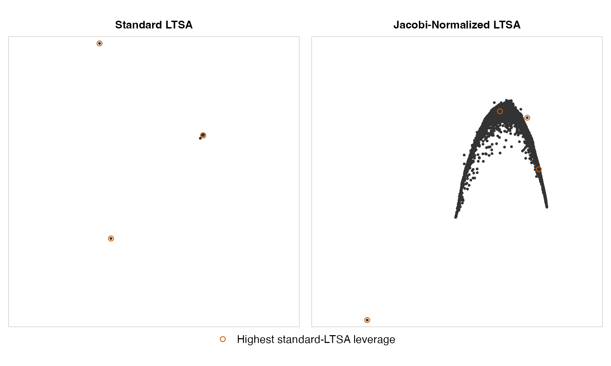
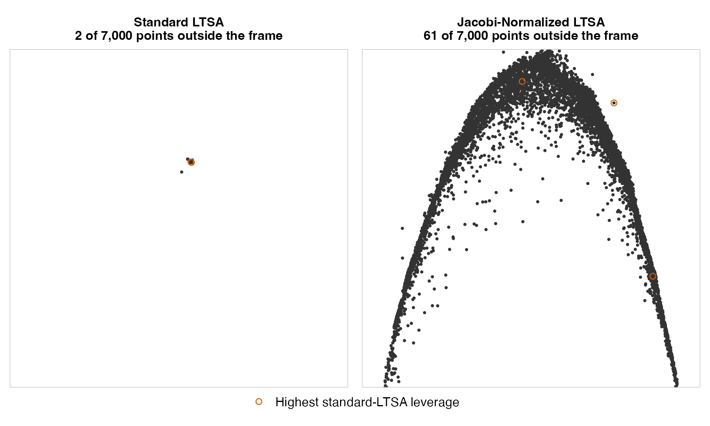
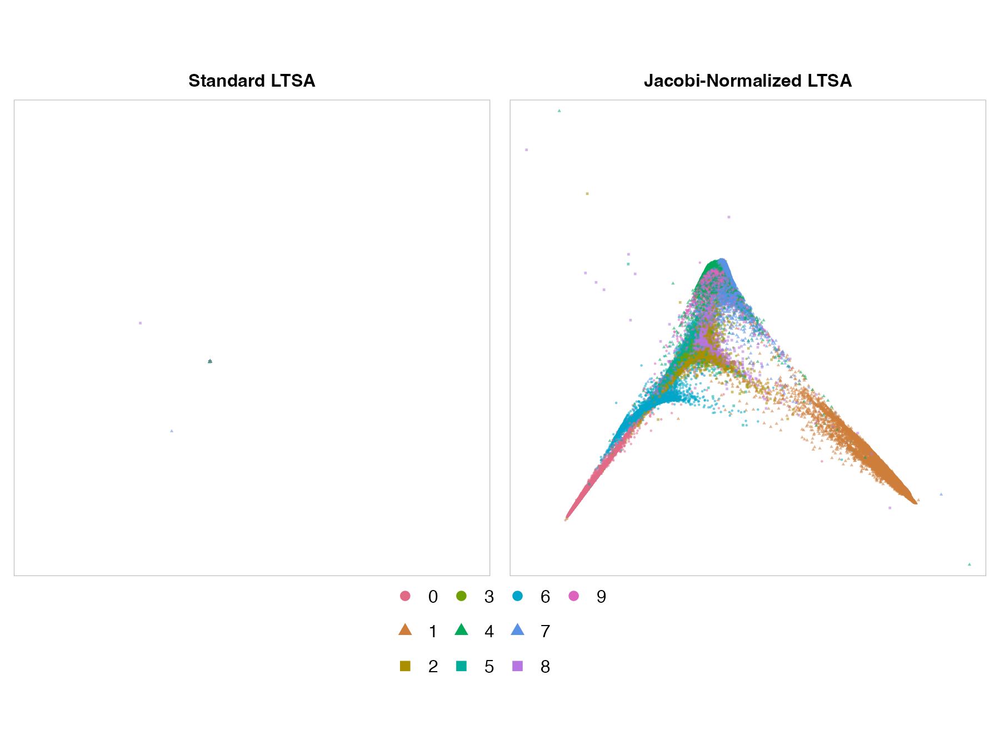
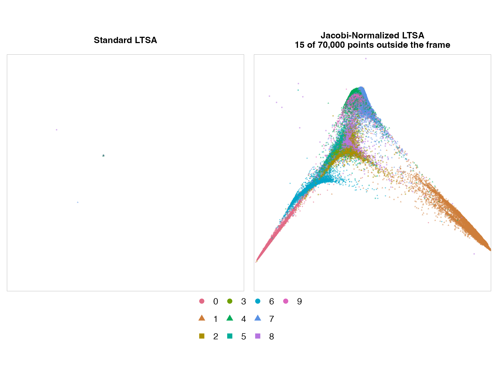
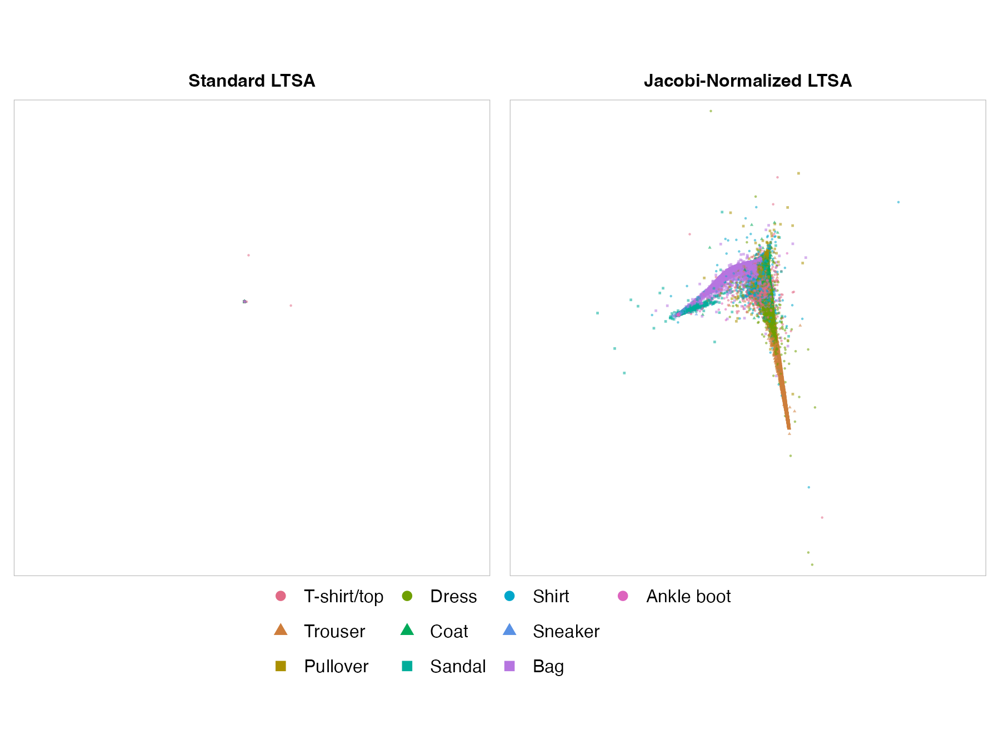
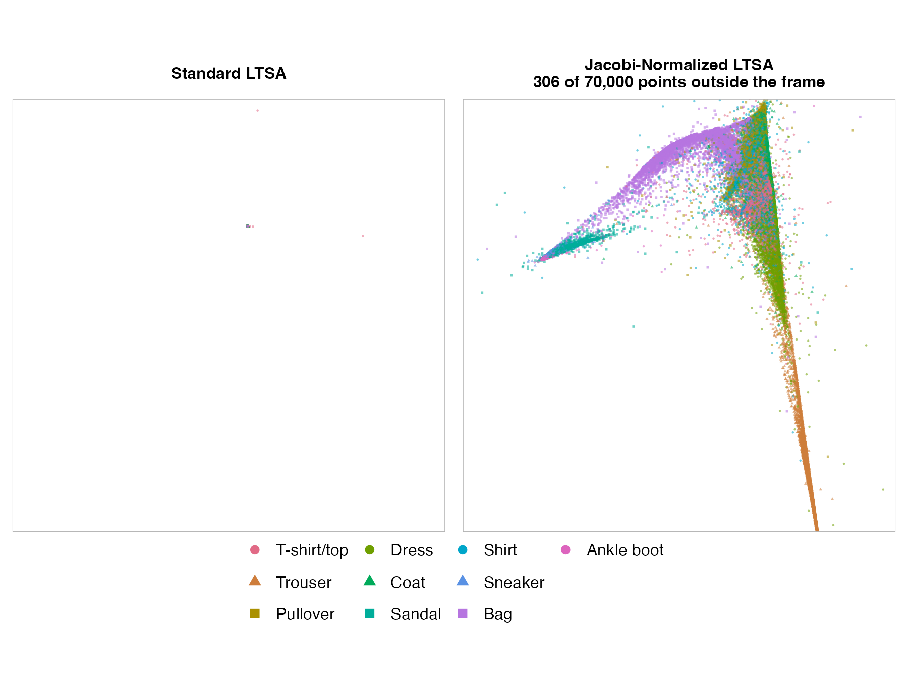
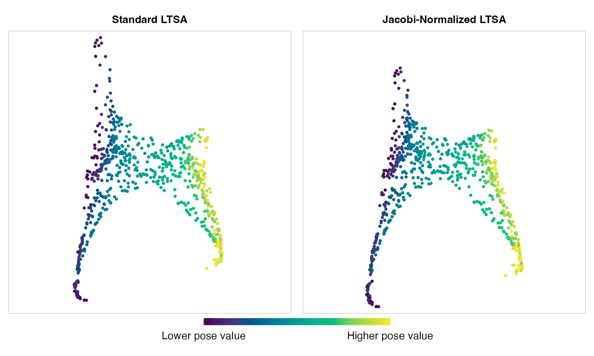
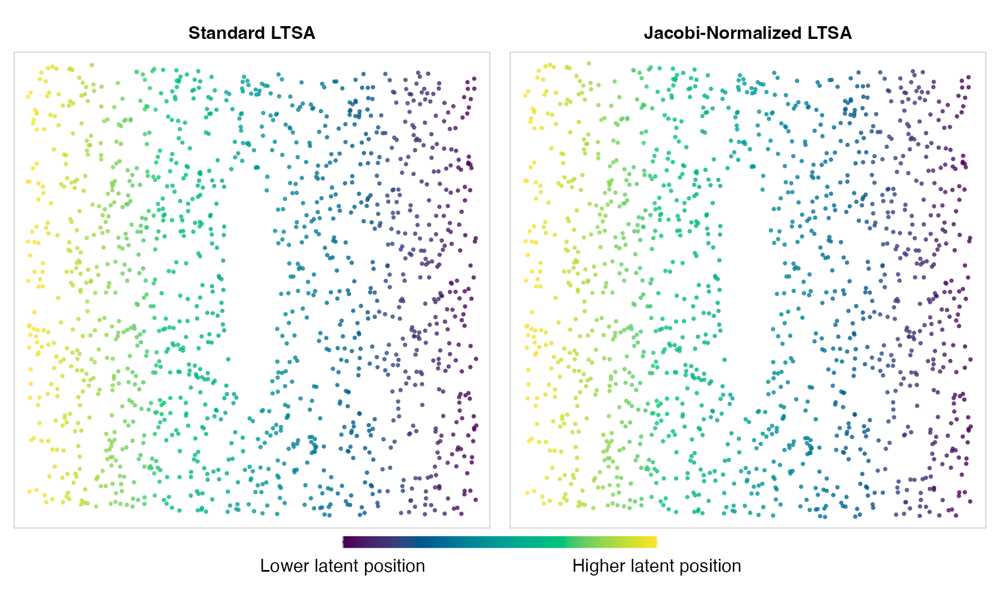
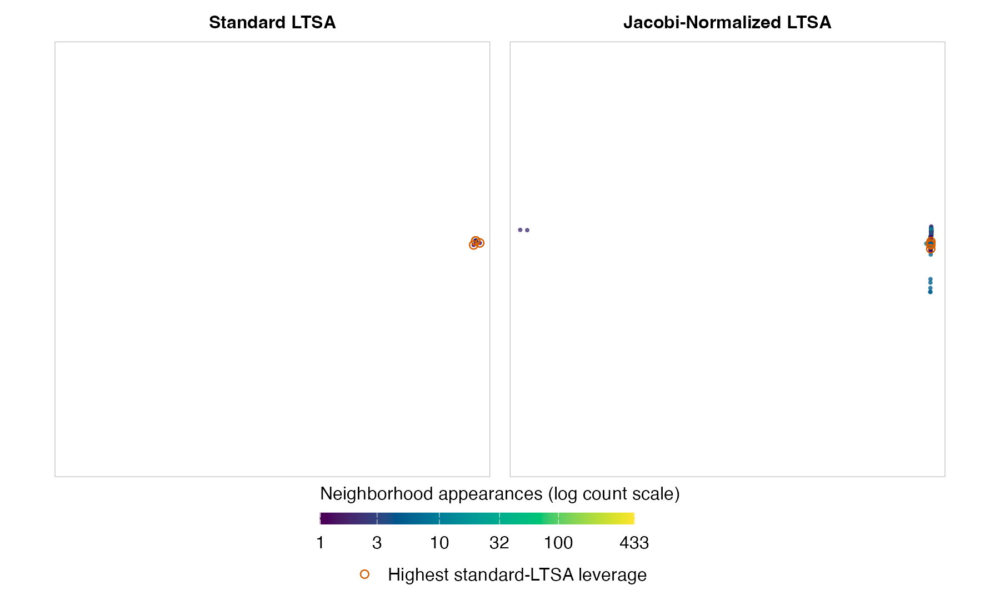

The LTSA article gave us a recipe: construct local charts, assemble their alignment matrix B, and use eigenvectors to find global coordinates that agree with those charts. Along the way, we chose a normalization to keep the embedding from collapsing. Changing that choice gives us a way to explore a family of LTSA methods while retaining much of the same implementation.
The idea is to measure the length and orthogonality of the global coordinate columns using a matrix D. We keep the neighborhoods, local PCA calculations, and alignment matrix B. The new constraint leads to a generalized eigenvalue problem. The trick is to change variables so that we can solve an ordinary symmetric eigenvalue problem using the existing LTSA eigensolver, then convert its eigenvectors back to the coordinates we want.
The choice of D makes this practical. For a diagonal D, the conversion requires only rescaling: the transformed alignment matrix has the same sparsity pattern as B. We also need to adjust the direction excluded for centering. Different valid weights give us a family of normalizations without having to replace the rest of the LTSA machinery.
This leaves us with two questions:
- What should D represent? We want the new inner product to reflect something relevant to the embedding: perhaps neighborhood participation, local alignment costs, or a property measured across the whole dataset. Valid choices of D can give different coordinates; we need a reason to prefer one choice to another.
- Can we use D efficiently? Constructing and storing it must be affordable, as must the transformation of B and the conversion back to coordinates. In particular, we would like to retain the sparse computations that make LTSA practical for larger datasets.
A diagonal D is an attractive starting point: it stores one weight per observation, and the transformations amount to rescaling. This article explores Jacobi normalization, which takes those weights from the diagonal of B itself. That gives us a choice tied to the local alignment problem, using quantities we have already computed. Let’s work through the change of constraints and the eigenvector calculation, then see what these weights do to some embeddings.
The Normalization Constraint
As before, let Y be an N \times d matrix of global coordinates, with one observation per row. After fitting an affine transformation from each local chart to its corresponding rows of Y, the total squared alignment error is
E(Y)=\operatorname{tr}(Y^{\mathsf T}BY).
We use exactly the same affine fits and cost as in the LTSA article. In particular, B is still symmetric and positive semidefinite, and B\mathbf{1}_N=0: translating the whole embedding leaves the cost unchanged.
The next step in standard LTSA was to require
Y^{\mathsf T}Y=I_d,\qquad Y^{\mathsf T}\mathbf{1}_N=0.
These conditions make the coordinate columns orthonormal and centered. The affine-fitting argument did not require this particular normalization. In section 4 of the LTSA paper, Zhang and Zha point out:
there are more than one way to impose the normalization conditions. The one we have selected […] is just one of the possibilities.
We can choose a different normalization while keeping E(Y) as our objective.
A Different Inner Product
Give each observation a finite positive weight d_j, and put these weights on the diagonal of an N \times N matrix D. For one coordinate column y, replace the usual squared length y^{\mathsf T}y with a weighted squared length:
y^{\mathsf T}Dy=\sum_{j=1}^N d_j y_j^2.
Because every weight is positive, this length is positive for every nonzero coordinate column. We choose the weights before optimizing Y and keep them fixed during the optimization. If every weight is one, D=I_N and we recover standard LTSA.
The corresponding inner product of two coordinate columns y and v is y^{\mathsf T}Dv. Using it for orthogonality and centering gives us the modified problem:
\begin{gathered} \min_Y\,\operatorname{tr}(Y^{\mathsf T}BY) \\ \begin{aligned} \text{subject to}\quad Y^{\mathsf T}DY&=I_d, \\ Y^{\mathsf T}D\mathbf{1}_N&=0. \end{aligned} \end{gathered}
The first constraint still prevents zero-length or repeated axes. The second makes each coordinate column orthogonal to the constant vector in the new inner product. For diagonal D, it says that each column has weighted mean zero:
\frac{\sum_j d_j y_j}{\sum_j d_j}=0.
This changes the global centering condition. Local PCA and the affine fits still use ordinary neighborhood means. Global centering chooses an origin for the whole embedding, and subtracting the weighted mean leaves the alignment cost unchanged because B\mathbf{1}_N=0.
The cost assigned to any particular Y is unchanged, but the set of allowed Y matrices has changed. Consequently, the best embedding can change too. In general, solving this new problem cannot be replaced by rescaling or applying a global affine transformation to the standard LTSA result.
The Generalized Eigenvalue Problem
For one coordinate column y, minimizing the cost with the weighted unit-length constraint leads to the following equation for a candidate solution:
By=\lambda Dy.
This is a generalized eigenvalue problem. Multiplying the equation by y^{\mathsf T} shows that \lambda is the alignment cost divided by the weighted squared length. Under the unit-length constraint, it is exactly the alignment cost. We therefore want the lowest-cost eigenvectors, excluding the constant direction and keeping the coordinates orthogonal in the weighted inner product.
We could use a generalized eigensolver, but we already have machinery for ordinary symmetric eigenproblems. Let’s change variables so we can use it here, and see why that also gives us the minimum rather than just a candidate solution.
Transforming the Eigenproblem
Here is the trick: temporarily rescale each observation’s coordinate value by the square root of its weight. We can then solve an ordinary eigenproblem and rescale the result back. Since D is diagonal with positive entries, D^{1/2} has entries d_j^{1/2} and is invertible. Set
z=D^{1/2}y,\qquad y=D^{-1/2}z.
Then the cost and the length become
\begin{aligned} y^{\mathsf T}By&=z^{\mathsf T}B_{\mathrm{sym}}z, \\ y^{\mathsf T}Dy&=z^{\mathsf T}z, \\ B_{\mathrm{sym}}&=D^{-1/2}BD^{-1/2}. \end{aligned}
So the two factors of D^{-1/2} come from substituting for y on both sides of the quadratic cost. B_{\mathrm{sym}} is symmetric, and it is positive semidefinite because its quadratic cost is the original nonnegative cost expressed in the new variables. We therefore have the same kind of minimization as in standard LTSA: minimize a symmetric quadratic cost with Euclidean unit-length and orthogonality constraints.
The eigenvector equation transforms along with them:
B_{\mathrm{sym}}z=\lambda z \quad\Longleftrightarrow\quad By=\lambda Dy.
If you’ve seen Laplacian Eigenmaps, this may look familiar. There, the same rescaling connects a generalized eigenvalue problem to an ordinary symmetric one. Here, B is LTSA’s alignment matrix, and D contains our chosen observation weights; in Laplacian Eigenmaps, the corresponding matrices are the graph Laplacian and the degree matrix.
We still need to enforce centering when choosing the eigenvectors. As in standard LTSA, the constant direction has zero alignment cost and must be excluded. In the new variables, it becomes
q=D^{1/2}\mathbf{1}_N,\qquad B_{\mathrm{sym}}q=0.
Choosing eigenvectors orthogonal to q enforces our weighted centering constraint, because
z^{\mathsf T}q=y^{\mathsf T}D\mathbf{1}_N.
For all d columns at once, write Z=D^{1/2}Y. The transformed coordinates have ordinary unit lengths, are orthogonal to each other, and are orthogonal to q. We can therefore take the d orthonormal eigenvectors of B_{\mathrm{sym}} with the lowest eigenvalues in the space orthogonal to q. This gives the global minimum for the transformed problem, and hence for our weighted problem. Recover the desired coordinates with Y=D^{-1/2}Z.
The returned columns of Y have unit length and are orthogonal and centered in the D inner product; they need not have those properties in the ordinary Euclidean sense.
The direction to exclude is now q,
which is generally not a constant vector. The procedure for handling other zero
modes carries over too: flotsam projects q out of the candidate vectors before
selecting the coordinates. The invertible change of variables preserves
the number of zero modes.
This transformation gives an equivalent ordinary eigenproblem for our new weighted problem. It does not preserve the ordinary eigenvalues or eigenvectors of B. Both the eigenvalues and the selected coordinate directions can change when we change D.
Jacobi Normalization
We can now return to the two questions from the introduction. A diagonal D meets the computational requirement particularly well: we store just N weights, rescale the existing nonzero entries of B, and recover Y by rescaling the rows of Z. These steps add work, and the eigensolver may take a different amount of time, but no dense alignment matrix or different eigensolver is needed. Other positive-definite choices of D are possible; for a non-diagonal D, sparsity alone is not enough to guarantee that its factors or the transformed matrix stay sparse.
For the meaning of those weights, the choice used by
flotsam is the diagonal of B:
D=\operatorname{diag}(B),\qquad d_j=B_{jj}.
This is Jacobi normalization. Every diagonal entry
of B_{\mathrm{sym}} is then one, since
B_{jj}/d_j=1. It requires every B_{jj} to be strictly positive. Positive
semidefiniteness of B guarantees only
nonnegative diagonal entries, so this is an additional requirement.
flotsam rejects normalization if an entry is nonpositive or
nonfinite.
B_{jj} is the alignment cost of giving observation j the value one and all other observations the value zero. So this uses the alignment cost of an isolated spike at observation j as that observation’s normalization weight.
The weighted squared length therefore uses each observation’s individual spike cost. A coordinate gains no special advantage merely because it concentrates on an observation that is individually cheap to move. We’ll return to this after looking at an example.
Two things contribute to B_{jj}: the number of neighborhoods containing observation j, which is related to its hubness, and the average residual cost of that spike within those neighborhoods. The latter depends on how well each neighborhood’s local tangent coordinates, together with a constant term, can represent the spike.
So these weights reflect both neighborhood participation and the local fits, while adding only row and column scaling to the matrix calculation. That gives us a reason to try them. Whether the resulting coordinates are more useful for a particular dataset remains an empirical question. Let’s look at some examples.
Comparing the Embeddings
Standard LTSA can put almost every observation in a tiny clump, with
a few points setting the scale of the whole picture. Jacobi
normalization changes how the coordinates distribute their
variation over the observations. In some datasets, it gives many more
points a visible role. To use it with a data matrix X:
flotsam::ltsa(X, normalize = TRUE)Fashion-MNIST Ankle Boots
These are two fits of the same 7,000 Fashion-MNIST ankle-boot images. Each comparison in this article uses the same approximate Euclidean neighbor graph for both fits: 15 observations per neighborhood, including the observation itself, with a local tangent dimension of two. Standard LTSA concentrates most images in a small clump. With Jacobi normalization, the images occupy a broad curved band. Both panels show the full coordinate range. Click a figure to enlarge it.

Orange rings track the same four images in both panels. They have the largest leverage scores: they contribute unusually strongly to the subspace spanned by the first twelve standard-LTSA coordinates. Only the first two coordinates are shown, so an image’s contribution need not be obvious in this view. The standard fit is aligned to the normalized fit by translation, rotation or reflection, and a uniform scale. The same alignment is used for the other comparisons.
Zoom In on the Ankle-Boot Embeddings
This view uses a square window based on the 1st and 99th percentiles of each normalized coordinate. Where images fall outside the window, the panel title reports the count.

Why Small Diagonal Entries Matter
When the local fits cannot be aligned exactly, LTSA must distribute a fixed amount of variation across the observations while keeping the cost small.
The diagonal entry B_{jj} has a concrete interpretation. If observation j is assigned the value one and all others zero, the cost is exactly B_{jj}. A small diagonal entry therefore makes a coordinate concentrated on that observation cheap. Centering it leaves the alignment cost unchanged. Standard LTSA can consequently put almost all the variation on one or two observations.
For the same spike under Jacobi normalization, the small diagonal entry affects both the cost and the weighted squared size. A small absolute weight alone no longer makes it cheap. This often spreads the variation over more observations. Jacobi normalization is a different way to satisfy LTSA’s normalization constraint, not a fundamentally better solution to the alignment problem.
The Complete MNIST Datasets
The ankle boots show what can happen within one class. Does normalization make a visible difference when all the classes are included?
Here are fits of all 70,000 MNIST digits and all 70,000 Fashion-MNIST images, combining the training and test sets. No observations are sampled or filtered by class. The inputs are the original pixel values, with constant pixels removed. Class labels are used only to color and mark the plots.
The full-range panels share a frame and show every point. Alignment makes corresponding shapes easier to compare, but its fitted scale can make a poorly matching standard fit look especially small. Expand the zooms to inspect the central region. The windows are based on the 1st and 99th percentiles of each normalized coordinate; a panel title reports the count if points fall outside. The standard fits have closely spaced modes at the boundary of the selected two-dimensional subspace, so the views may be sensitive to numerical or graph changes.
MNIST
Standard LTSA again puts almost all the variation on a couple of observations, leaving the rest of the digits in a tiny clump. Normalization produces a broad, branched shape. Zeros and ones occupy different arms, but many of the other digits still overlap: this is a visible change without a clean separation into ten groups.

MNIST: Zoom Into the Central Region

Fashion-MNIST
The change also survives putting the ankle boots back among the other clothes. Bags occupy a curved branch of the normalized plot, and trousers extend along a long, thin arm. Several clothing classes still overlap heavily, but we can see class-related structure that is hidden in the standard fit’s clump.

Fashion-MNIST: Zoom Into the Central Region

When Normalization Helps Less
Isomap Faces
The Isomap face dataset contains 698 images of a single face with different poses and lighting. Using the complete dataset, both fits give similar broad shapes, with a smooth progression in the supplied pose value. Here normalization makes little visible difference. The pose values are used only to color the points.

S-Curve with a Hole
Both fits unfold this three-dimensional S-shaped surface into a flat sheet, preserving its hole and the order of points along the curve. Normalization leaves the arrangement almost unchanged.

Color follows position along the original S-curve. The panels are aligned as before, with every point shown.
CIFAR-10 Airplanes
Normalization changes the shape of this collection of airplane images, but neither view gives us a useful map of their variation. Spreading out more observations is not enough to make a good visualization. Color shows how often each image appears in the input neighborhoods; orange rings mark the four images with the largest leverage scores in the standard-LTSA coordinate subspace, as in the ankle-boot example.

Trying It Yourself
Here’s how to compare the two fits and make a chart like the
full-range MNIST and Fashion-MNIST figures above. Install or update
these packages; the plotting code uses vizier 0.6.2 or
later:
install.packages("pak")
pak::pak(c(
"jlmelville/flotsam", "jlmelville/snedata", "jlmelville/vizier",
"ggplot2"
))First choose a dataset. For all 70,000 Fashion-MNIST images:
images <- snedata::download_fashion_mnist(as = "list")
labels <- images$meta$descriptionFor all 70,000 MNIST digits, replace those two lines with:
images <- snedata::download_mnist(as = "list")
labels <- images$meta$labelThe rest of the code works with either dataset. Remove constant pixels and make one neighbor graph for both fits. Each neighborhood contains the image itself and fourteen other images; sorting equal distances by row index makes the selection consistent when there are ties.
X <- images$data
keep <- apply(X, 2, function(column) min(column) != max(column))
X <- X[, keep, drop = FALSE]
set.seed(20260825)
nn <- rnndescent::nnd_knn(X, k = 16, n_threads = 1)
graph <- t(vapply(
seq_len(nrow(X)),
function(i) {
neighbors <- nn$idx[i, order(nn$dist[i, ], nn$idx[i, ])]
c(i, head(neighbors[neighbors != i], 14))
},
integer(15)
))
set.seed(20260825)
standard <- flotsam::ltsa(
X,
nn_method = graph,
ndim = 2,
spectral_dim = 2,
eig_method = "rspectra",
eig_k = 8,
normalize = FALSE
)
set.seed(20260825)
normalized <- flotsam::ltsa(
X,
nn_method = graph,
ndim = 2,
spectral_dim = 2,
eig_method = "rspectra",
eig_k = 8,
normalize = TRUE
)Before plotting, align the standard fit to the normalized fit. This helper centers the two embeddings, finds a rotation or reflection, and fits a uniform scale. It preserves the shape of each embedding.
align_to <- function(points, reference) {
centered <- scale(points, center = TRUE, scale = FALSE)
target <- scale(reference, center = TRUE, scale = FALSE)
fit <- svd(crossprod(centered, target))
rotated <- centered %*% fit$u %*% t(fit$v)
size <- sum(rotated * target) / sum(rotated^2)
sweep(size * rotated, 2, colMeans(reference), "+")
}
set.seed(20260825)
rows <- sample.int(nrow(X))
coordinates <- rbind(align_to(standard, normalized)[rows, ], normalized[rows, ])
p <- vizier::embed_ggplot(
coordinates,
rep(labels[rows], 2),
color_scheme = grDevices::hcl.colors(nlevels(labels), "Dark 3"),
fixed_aspect = TRUE,
show_axes = FALSE,
cex = 0.4,
alpha_scale = 0.55
)
methods <- c("Standard LTSA", "Jacobi-Normalized LTSA")
p$data$method <- factor(rep(methods, each = nrow(X)), levels = methods)
p +
ggplot2::aes(shape = color) +
ggplot2::scale_shape_manual(
values = rep(c(16, 17, 15), length.out = nlevels(labels))
) +
ggplot2::facet_wrap(~method, nrow = 1) +
ggplot2::labs(color = NULL, shape = NULL) +
ggplot2::theme(legend.position = "bottom") +
ggplot2::guides(
color = ggplot2::guide_legend(nrow = 3, override.aes = list(size = 3)),
shape = ggplot2::guide_legend(nrow = 3)
)The facets share coordinate limits and class colors, with equal physical units on both axes. Every point is shown. Shuffling the rows keeps later classes from systematically covering earlier ones.
The complete-dataset examples use the two retained spectral
coordinates shown here. For the ankle-boot, S-curve and CIFAR examples,
use spectral_dim = 12 and eig_k = 16, still
plotting the first two coordinates. The same seed was used for neighbor
search and each fit throughout the article, and for generating the
S-curve with snedata::s_curve_hole(n_samples = 1500).
The image data are MNIST (Yann LeCun, Corinna Cortes, and Christopher Burges), Fashion-MNIST (Han Xiao, Kashif Rasul, and Roland Vollgraf) and CIFAR-10 (Alex Krizhevsky, Vinod Nair, and Geoffrey Hinton).